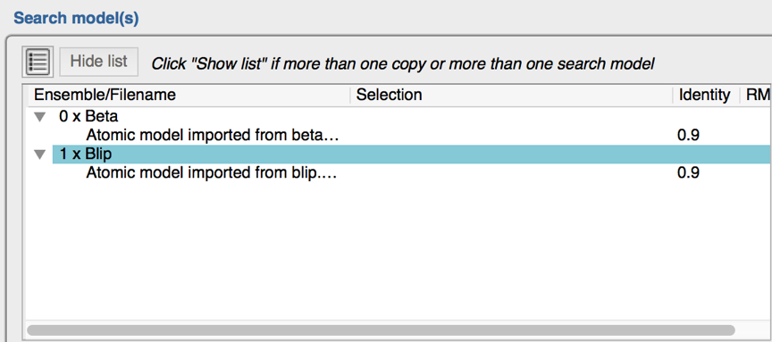
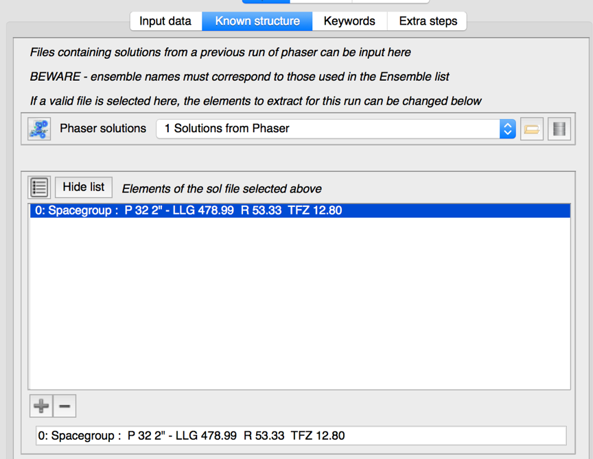

Programs¶
PHASER, COOT
Scenario¶
This tutorial demonstrates a difficult(ish) molecular replacement problem. β-Lactamase (BETA, 29kDa) is an enzyme produced by various bacteria, and is of interest because it is responsible for penicillin resistance, cleaving penicillin at the β-lactam ring. There are many small molecule inhibitors of BETA in clinical use, but bacteria can become resistant to these as well. Streptomyces clavuligerus produces β-lactamase inhibitory protein (BLIP, 17.5kDa), which has been investigated as an alternative to small molecule inhibitors, as it appears more difficult for bacteria to become resistant to this form of BETA inhibition.
The structures of BETA and BLIP were originally solved separately by experimental phasing methods. The crystal structure of the complex between BETA and BLIP has been a test case for molecular replacement because of the difficulty encountered in the original structure solution. BETA, which models 62% of the unit cell, is trivial to locate, but BLIP is more difficult to find.
Task 1: Run PHASER to position “Beta” and BLIP¶
{kind=link}
{kind=link}
What do you think is the best order in which to search for BETA and BLIP? Under what circumstances could the lower molecular weight search model be the easiest to find by molecular replacement?
What is the space-group recorded on the mtz file? If you had not solved this structure, would you know that this was the space-group? If not, what other space-group(s) must you consider? (Think about handedness (enantiomorphs))
Run Phaser for solving BETA/BLIP Bring up the GUI for PHASER HINT: To handle the fact that there are two distinct search models, click the “Show List” button in the “Search model(s)” section. Treat Beta as one ensemble, and blip as another….the population of the search model gui in the end should look like:
{kind=link}
Questions:
Has Phaser solved the structure? Look at the Z-‐‑scores for the rotation and translation functions
What search order was used? If you wanted, you could force the other search order and see what difference this makes. – see below “Building the complex one component as a time”
Which space group was the solution in?
Identify the anisotropy correction, rotation function, translation function, packing, and refinement modes, for the two search molecules, and all the space groups. Draw a flow diagram of the search strategy.
Why doesn’t Phaser perform the rotation function in the two enantiomorphic space groups?
Which reflections in the data are particularly important for deciding the translational symmetry of the space-groups to search? Under what data collection conditions might you not have recorded these important reflections? Are there any other space-groups that you might want to consider when solving BETA/BLIP?
How big is the anisotropic correction for the data?
Task 2: Building the complex one component as a time.¶
This is done using the fact that PHASER writes out “result” objects which specify solutions for the searches it has conducted. These can be provided to the next iteration of PHASER to “pre-position“ some of the ensembles you provide to the GUI.
This sounds harder than it is.
In practice, to position beta in a first run and blip in a second, you set up the first search model table as follows:
{kind=link}
Note that I have provided both beta and blip ensembles AND GIVEN THEM MEANINGFUL NAMES
When this job is finished, you should clone the MR job, and edit the new copy in the following two ways:
Edit the search model table to look like this: 
Read in the “solutions” file from the previous job (Hint: this is done in the “Known structure” of the task GUI  NB: The solution file uses the Ensemble’s short identifier to know to which coordinate set the solution applies …this is why we bothered to provide a sensible identifier !
{kind=link}
{kind=link}